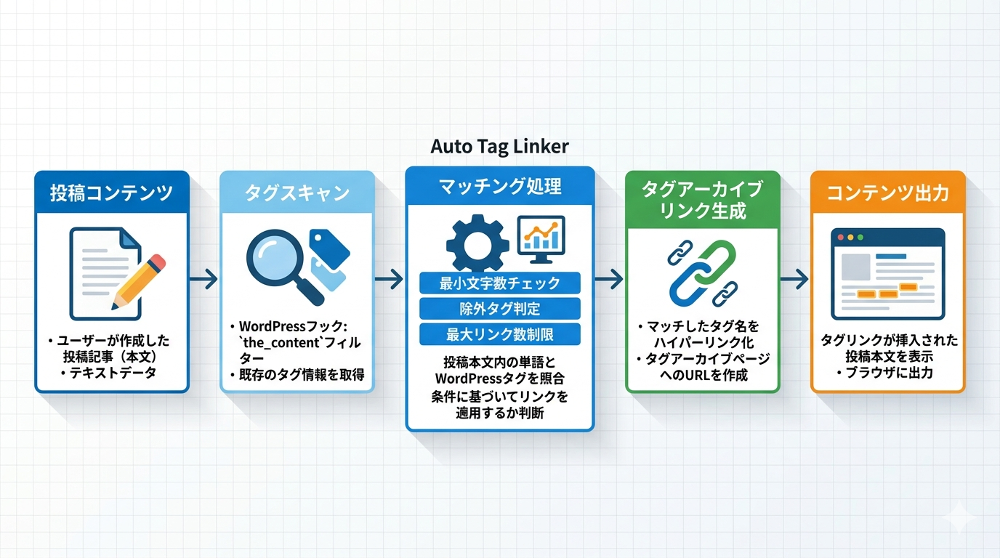

Kashiwazaki SEO Auto Tag Linker マニュアル

Kashiwazaki SEO Auto Tag Linker は、WordPress投稿内のタグを自動検出し、タグアーカイブページへの内部リンクに変換するSEOプラグインです。リンクスタイルのカスタマイズ、タグ除外、最小文字数フィルタリングなど、細かなリンク制御が可能です。
タグに基づく内部リンクの自動生成は、サイト内のコンテンツ間の関連性を強化し、クロール効率を向上させます。本プラグインは投稿内のタグを自動検出してタグアーカイブへのリンクに変換し、リンクスタイルのカスタマイズにも対応します。
主な機能
自動タグリンク
投稿内のタグを自動検出しタグアーカイブへの内部リンクに変換
リンク設定
リンク色・下線スタイル・最大リンク数・最小文字数を細かく設定
除外管理
特定タグの除外やセルフリンク防止で不要なリンクを抑制
プラグインの特長
- 投稿コンテンツ内のタグ名を自動検出しタグアーカイブへのリンクに変換
- リンクの色（カラーコード指定）と下線スタイルをカスタマイズ可能
- 1投稿あたりの最大リンク数を設定して過剰なリンクを防止
- 最小文字数フィルタにより短すぎるタグのリンク化を抑制
- 特定タグを除外リストに登録して意図しないリンクを回避
- セルフリンク防止機能（自分自身のタグアーカイブへのリンクを無効化）
- 複数の投稿タイプに対応（投稿、固定ページ、カスタム投稿タイプ）
- キャッシュ機能により大量のタグがあるサイトでもパフォーマンスを維持
- フロントエンドはインラインCSSのみ、JavaScriptなし

SEO・GEO（生成AI最適化）への効果
内部リンク構造の強化
タグベースの自動内部リンクは、サイト内のナビゲーションを改善し、リンクエクイティ（リンクジュース）をサイト全体に適切に分配します。関連するコンテンツ同士がタグを通じてリンクされることで、検索エンジンがサイトの主題構造をより深く理解できるようになります。
セマンティックな関連性の構築
タグベースのリンクは、コンテンツ間の意味的なつながりを作ります。同じタグを共有する記事がリンクで結ばれることで、トピッククラスターが自然に形成され、サイト全体のトピカルオーソリティが向上します。
低品質リンクの防止
最小文字数フィルタにより、1〜2文字の短すぎるタグが無意味なリンクになることを防ぎます。これにより、ユーザー体験を損なわない高品質な内部リンク構造を維持できます。
生成AI（GEO）への対応
適切にリンクされたコンテンツは、AIがサイト内のトピック関係を理解するのに役立ちます。タグベースの内部リンクにより、AIはページ間の主題的なつながりを把握し、サイト全体のコンテンツ構造をより正確に認識できるようになります。
目次（マニュアル構成）
| ページ | 内容 |
|---|---|
| 概要 | プラグインの機能概要、SEO/GEO効果、動作要件 |
| インストール・初期設定 | インストール手順、リンクスタイル・対象投稿タイプの基本設定 |
| 詳細設定 | タグ除外、最小文字数、最大リンク数、セルフリンク防止の設定 |
| トラブルシューティング | よくある問題と対処法、動作要件、技術仕様、アーキテクチャ |
動作要件
| 項目 | 要件 |
|---|---|
| WordPress | 5.0 以上 |
| PHP | 7.4 以上 |
| 対応ブラウザ | Chrome、Firefox、Safari、Edge（最新版） |
インストール後すぐに使い始めたい場合は、インストール・初期設定ページに進んでください。